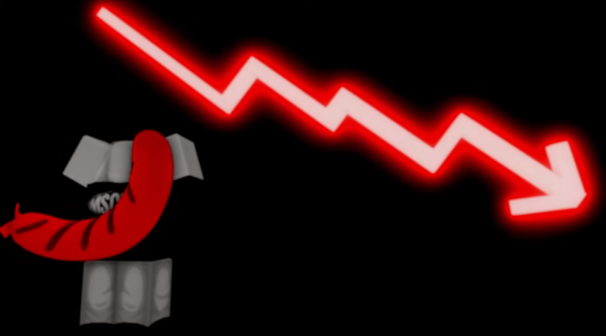

La plupart des créateurs abandonnent après leur premier jeu, faute de résultats satisfaisants.
Pourtant, le problème ne vient souvent pas du jeu lui-même, mais de la manière dont Roblox le référence et le met en avant.

Roblox Academy a été créée pour résoudre ce problème. Elle te donne les outils et les méthodes pour faire émerger tes jeux et générer tes premiers revenus le plus rapidement possible.
Tu peux avoir une excellente idée, un gameplay travaillé et des dizaines d'heures de développement derrière toi. Ça ne garantit pas pour autant que les joueurs découvriront ton expérience.
Sur Roblox, des milliers de jeux sont disponibles et de nouvelles expériences apparaissent chaque jour pour attirer l'attention des joueurs.
Dans cet environnement concurrentiel, savoir se démarquer est devenu aussi important que savoir développer.
De nombreux développeurs font des erreurs qui limitent fortement le potentiel de leur jeu.
Le temps que tu consacres à ton jeu est un investissement important. Sans méthode, il est facile de passer des semaines sur des fonctionnalités qui n'améliorent pas vraiment l'expérience des joueurs.
Savoir identifier tes priorités, comprendre ton public et analyser tes résultats te permet de mieux utiliser ton temps et tes ressources.
Roblox Academy t'aide à éviter ces erreurs et à mieux comprendre les différents aspects du développement d'un jeu à succès.
Grâce aux modules, aux analyses hebdomadaires et aux échanges avec la communauté, tu développes tes compétences et tu améliores tes projets pas à pas.
Le succès n'est jamais garanti, mais avoir les bonnes connaissances peut faire une vraie différence.